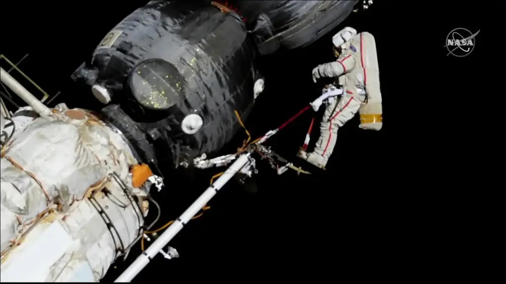
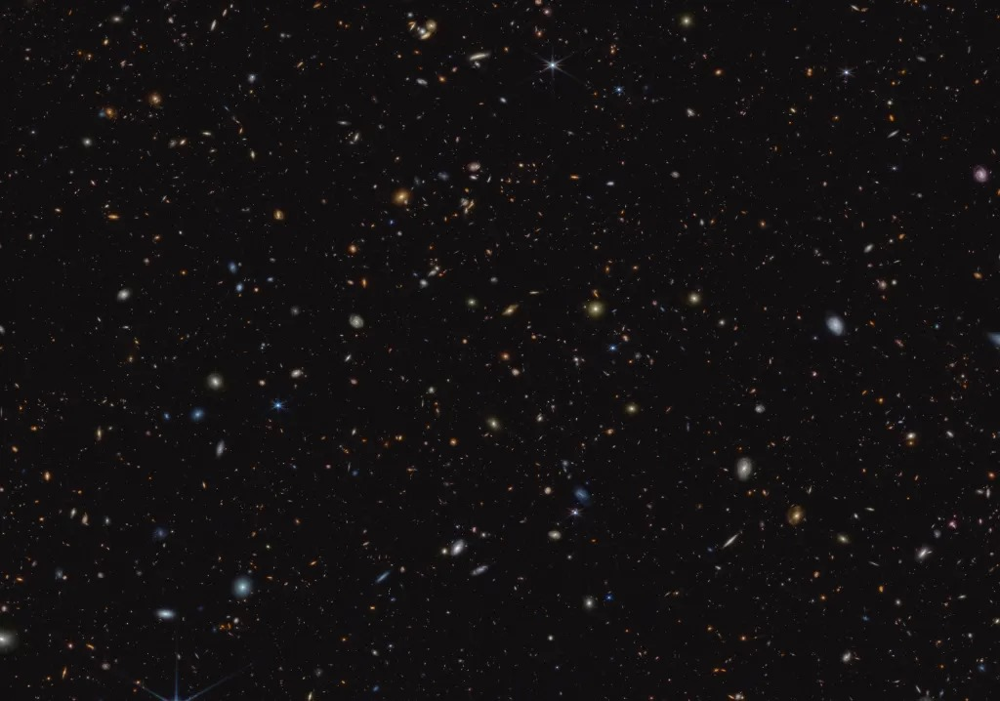

Cosmonaut Oleg Kononenko inspects the Soyuz MS-09 spacecraft during a spacewalk on Dec. 11, 2018.
Biomedical Research, Spacewalk Preps Wrap Week on Station
19 April 2024
In the blog post dated April 19, 2024, I provided updates on the activities aboard the International Space Station (ISS) as we wrapped up the week. Our focus was on biomedical research and preparations for upcoming spacewalks. I participated in various biomedical experiments aimed at understanding the effects of spaceflight on the human body, contributing valuable data to ongoing research efforts. Additionally, we conducted final preparations for upcoming spacewalks, ensuring that equipment and procedures were in place for successful missions outside the station. These activities reflect our commitment to advancing scientific knowledge and maintaining the operational capabilities of the ISS. As we conclude the week, I am proud of our accomplishments and look forward to continuing our work in space exploration. Read more here
Lyrids Meteor shower
Enjoy the Warming Weather Under These 3 Upcoming Meteor Showers
18 April 2024
Get ready for some spectacular skywatching as meteor showers take center stage in the upcoming months. The Lyrid meteor shower, peaking overnight on April 21-22, may be slightly overshadowed by the bright waxing gibbous Moon, but dedicated observers can still catch a glimpse of this ancient shower, which has been observed for over 2,700 years. In early May, the Eta Aquarids meteor shower is expected to put on a dazzling display, known for its fast-moving meteors that leave glowing trails behind them. This year is predicted to be an outburst year, especially in the Southern Hemisphere, with up to one meteor per minute visible. The waning crescent Moon during its peak on May 4-5 means minimal interference from moonlight.
Mark your calendars for the Perseid meteor shower in mid-August, described as a "stunner" by experts. With no moonlight to detract from the show, viewers can expect to see about 50 to 100 meteors per hour during its peak on August 12-13. The Perseids are also famous for their fireballs, adding to the excitement of this celestial event.
Read more here

NASA's Webb Makes the Distant Universe Dream Come True
Advanced Research and Ongoing Spacewalk Preps Pack Schedule
18 April 2024
The Expedition 71 crew aboard the International Space Station had a busy day with various research activities and spacewalk preparations. NASA astronauts and Roscosmos cosmonauts split their time between servicing hardware, conducting space biology experiments, and preparing for upcoming spacewalks. Investigations ranged from studying thermophysical properties of materials to analyzing microbial resistance to antibiotics. Crew members also tested portable breathing gear and conducted fitness evaluations ahead of an upcoming spacewalk on April 25. The day ended with preparations for the departure of the SpaceX Dragon spacecraft, scheduled for April 26. Read more here

Image from Nasa's James Web Telescope
NASA's Webb Makes the Distant Universe Dream Come True
18 April 2024
NASA's James Webb Space Telescope has realized astronomers' dreams by capturing images of the distant universe, showcasing galaxies formed shortly after the Big Bang. With its advanced infrared technology, Webb has unveiled the universe's infancy, revealing insights into cosmic evolution, galaxy diversity, and the processes shaping their development. Notably, Webb's observations have detected galaxies at various evolutionary stages, supporting theoretical models and refining our understanding of cosmic history. These findings pave the way for deeper exploration of the universe's early epochs, offering unprecedented detail and inspiring further research into cosmic phenomena. As Webb continues its mission, astronomers anticipate additional discoveries that will reshape our understanding of the universe and inspire future generations. Read more here

ISS Daily Summary Report
17 April 2024
I n the ISS Daily Summary Report for April 17, 2024, our crew embarked on a day filled with diverse tasks and scientific endeavors aboard the International Space Station. Our activities ranged from conducting maintenance tasks to advancing scientific research across various fields. We diligently performed experiments in space biology, biomedical studies, and life support systems, contributing valuable data to ongoing research efforts. Additionally, we prepared for upcoming spacewalks, managed cargo operations, and ensured the station's operational efficiency through maintenance tasks. Our dedication to these tasks underscores our commitment to maintaining the station's operations and furthering scientific exploration in the unique microgravity environment of space. Read more here

Astronaut MIke Barratt installs a small satellite orbital deployer inside the Kibo laboratory module's airlock.
Crew Works Cargo, Biomedical Ops, and Spacewalk Preps
17 April 2024
In the blog post dated April 17, 2024, I detailed our crew's activities aboard the International Space Station (ISS). Our day was filled with tasks ranging from unloading cargo from visiting spacecraft to conducting biomedical experiments and preparing for upcoming spacewalks. We diligently managed cargo operations, ensuring the delivery of essential supplies and equipment for our mission. Additionally, we conducted vital biomedical research, contributing to our understanding of human health in space. Preparations for spacewalks were also a priority as we readied equipment and reviewed procedures to ensure the success of these critical missions. Our commitment to efficiently managing station operations and advancing scientific research reflects our dedication to our mission aboard the ISS. Read more here

Boeing's Starliner spacecraft
NASA's Boeing Crew Flight Test Begins Stacking Operations
16 April 2024
In the blog post dated April 16, 2024, I shared updates on NASA's Boeing Crew Flight Test as stacking operations commenced. The post highlighted the significant milestone of assembling components for the crew flight test vehicle, marking a crucial step forward in the spacecraft's development. As part of the crew, I observed the stacking operations, witnessing the integration of key elements that will enable future crewed missions. This milestone represents progress towards achieving NASA's goals of enhancing space exploration capabilities and facilitating crewed missions to the International Space Station and beyond. The successful stacking operations underscore the collaborative efforts between NASA and Boeing in advancing space exploration technology and preparing for the next phase of crewed spaceflight.Read more here